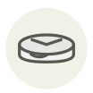

Bleu du Vercors-Sassenage
Bleu du Vercors-Sassenage
| Nom latin | Bleu du Vercors-Sassenage AOP |
|---|---|
| Famille | Laitages & œufs |
| Origine | Vercors, Isère et Drôme |
| Saison | Toute l’année |
| Goût | Doux · Lacté · Sucré · Noisette |
| Prix courant | 20–30 €/kg |
Ce que c’est
Le 28 juin 1338, le baron Albert de Sassenage signa une charte autorisant les habitants de Villard-de-Lans à vendre librement leur fromage ; jusque-là, il lui revenait en redevance. Le fromage porte son nom depuis près de sept cents ans ; les barons, eux, ont moins duré.
En cuisine
Il naît du lait du soir partiellement écrémé mêlé au lait entier du matin, d’où ce bleu si discret. Employez-le là où un persillé puissant avalerait le plat : gratin, soufflé, tarte aux poireaux.
S’accorde avec
Pomme de terre Crème Noix Beurre Poireau Œuf Miel Poire
Même espèce
Bleu d’Auvergne Bleu de Gex Haut-Jura Bleu de Termignon Bleu des Causses
Une erreur ici, ou un oubli ? Dites-le nous